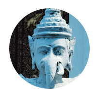
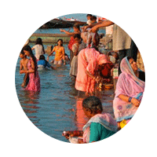
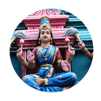
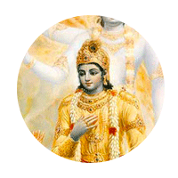
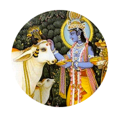
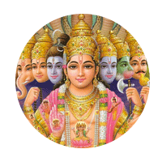
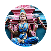
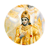
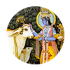
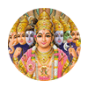

- Hinduismen er den største religionen i India. Den er over 4500 år gammel.
- Hinduismen har blitt til av tradisjoner fra gammelt av, og har ikke bare én grunnlegger.
- Hinduer mener at alt som lever, er hellig. De tror også at det finnes mange forskjellige guder.
- De tre viktigste gudene er:
- Brahma, som skaper verden.
- Vishnu, som opprettholder verden.
- Shiva, som ødelegger verden.
- Dette viser tre sider ved livet for en hindu. Verden skapes, opprettholdes, ødelegges og skapes igjen.
- Slik tror også hinduene at det er for mennesker. Etter at vi dør, gjenfødes vi igjen.
- En hindus mål er å bli fri fra gjenfødelsen.

Bønn - Pudsja
- Hinduer kan be til mange guder. Du kan be hjemme eller i templet.
- Hjemme har hinduene ofte et eget sted hvor de ber. Her plasserer de gudestatuene som de vil be til.
- Hinduene vasker gudestatuene og gir dem gaver, som blomster, mat og drikke.
- Det er også vanlig å tenne lys og røkelse. De kan også danse og synge for gudene.
- Alt dette kalles pudsja. Pudsja gjøres vanligvis om morgenen.
- Det er viktig at man har vasket seg og er ren når man skal gjøre pudsja.

Pilegirmsreise til elven Ganges
- Pilegrimsreiser er viktig for hinduer. På en slik reise er det vanlig å dra til et hellig sted.
- For hinduer er vann og elver spesielt hellige. Det er mange hinduer som vil reise til elven Ganges.
- Elven er oppkalt etter elvegudinnen Ganga, og er den helligste elven for alle hinduer.
- Når en hindu har kommet til Ganges, skal han helst bade eller vaske seg i elven, for å gjøre sjelen ren.

Hinduistiske templer
- Hinduene kaller ofte templene sine mandir som betyr “det indre jeg”. Disse templene er åndelige hus.
- De er vanligvis bygget til ære for en gud, men det kan ha statuer eller bilder av flere guder.
- I templet er det ofte et basseng med vann. Dette vannet brukes for å vaske seg og rense bort synder.
- I noen templer har disse bassengene også blitt brukt som vannlagre. Dette vannet kunne brukes når det var tørketid.

Bhagavadgita - religiøs tekst
- Bhagavadgita er en av hinduismens viktigste skriftter og betyr “Herrens sang”.
- I teksten snakker guden Krishna og krigeren Arjuna om hvordan man skal leve livet rett.
- Den forklarer hvordan man kan bli fri fra gjenfødelsen. Krishna sier at mennesket må følge kjærligheens vei og ikke bare tenke på seg selv.
- Den kjente hinduen Mahatma Gandhi leste Bhagavadgita. Det inspirerte ham til å kjempe for frihet for folket sitt på en ikkevoldelig måte.

Hellig ku
- For en hindu er alt liv hellig. Kua er for hinduene et hellig dyr. Den minner om rikdom og liv.
- Det er ingen hinduer som vil skade eller drepe ei ku. Siden kua er så spesiell, får den gå fritt rundt i gatene.
- Hinduer spiser ikke kukjøtt. Mange hinduer spiser ikke kjøtt i det hele tatt fordi de mener det er galt å drepe dyr.
- Dem kaller man vegetarianere.

Karma
- Hinduer tror at mennesket blir født mange ganger. Karmas lov sier at det du gjør i dette livet, bestemmer hvordan det neste livet blir.
- Du får god karma hvis du gjøre gode handlinger og lever riktig. Hvis du lever mange gode liv, kan du til slutt slippe å bli gjenfødt.
- Da har du oppnådd moksha, som betyr at du er befridd fra livet på jorden og kan leve med gudene.
- Det er veldig vanskelig å oppnå moksha.
 |
 |  |  |  |